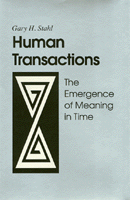

<body bgcolor="#FFFFFF" text="#000000" link="#0000FF" vlink="#CC0000" alink="#CC0000"><center><hr width="350" size="1" align="center" noshade>A provocative account of the creation of human meaning in history<hr width="350" size="1" align="center" noshade><p><a href="https://cdcshoppingcart.uchicago.edu/Cart/ChicagoBook.aspx?ISBN=9781566392877&&PRESS=temple" target="_top">Buy this book!</a> | <a href="https://cdcshoppingcart.uchicago.edu/Cart/Cart.aspx?PRESS=temple" target="_top">View Cart</a> | <a href="https://cdcshoppingcart.uchicago.edu/Cart/Cart.aspx?PRESS=temple" target="_top">Check Out</a></p><p></p></center><!--none//--><h1>Human Transactions</h1>
<H2>The Emergence of Meaning In Time</H2>
<h3>Gary H. Stahl</h3>
<P>cloth 1-56639-287-X $89.50, Feb 95, <FONT COLOR=#990033>Available</FONT>
<BR> 232 pp
6x9
</P><BLOCKQUOTE><I>"This is an original and provocative work that asserts&#151and arguably demonstrates&#151the conjunction between ethics and metaphysics. Stahl writes in an authentic and distinctive voice; he not only presents arguments&#151it is clear that he also believes them. The point he stresses repeatedly is not a version of 'compatibilism' between science and ethics, between the material and moral worlds&#151but the necessity of the relation between them (and so also, of course, of its possibility). This is an important thesis from which both moral philosophers and researchers in the sciences can learn. Stahl calls attention to significant issues in ethics and in the relation between ethics and epistemology&#151and does this in a way that is at once challenging and evocative. This is a valuable addition to the literature."</I>
<br>&#151<b>Berel Lang</b>, State University of New York at Albany<I></I></BLOCKQUOTE>
<p>Given the evolutionary and developmental processes that form a human being, can we plausibly believe that people can make rational and autonomous choices about their lives? How can such choices be non-arbitrary and compelling if there are no norms outside the historical process against which they can be judged? And if that historical process is simply an accidental episode in an indifferent universe, what sorts of meanings can individual lives and choices have?
<p>These are the questions that Gary H. Stahl addresses in this original and provocative work. Drawing on arguments from biology and psychology as well as from the history of philosophy, Stahl examines the naturalistic meaning that can be assigned to moral agency, choice, and responsibility, in order to assert the conjunction between ethics and metaphysics. His focus is the process within which the self and the other, defined in terms of each other, emerge within evolution and development so as to generate an irreducible level of meaning.
<BR>&nbsp;<h2>Contents</h2><P>
<p>Acknowledgments
<br>Introduction: The Tree Original Questions
<p>1. On Not Reducing Agents to Organisms
<br><I>People and Process &#149
Levels of Process &#149
The Emergence of Persons within Process &#149
Methodological Problems and Prospects</I>
<p>2. Biological and Ethical Processes
<br><I>Health at Different Levels of Process &#149
"Health" and "Disease" as Integrative Concepts &#149
Morality as an Ordering Principle &#149
Health and Morality as Levels of Integration &#149
Emergent Levels of Space and Time &#149
Replies to Some Criticisms &#149
Implications of the Bioethical Parallels</I>
<p>3. The Exemplary Status of Moral Acts
<br><I>Meaning in History &#149
History and Evolution as Limits to Moral Meaning &#149
Acts in Moral Space and Time &#149
Moral Judgment as Both Reflective and Determinant &#149
Transition to the Issues of History</I>
<p>4. W.W. Miller and the Midworld of Action
<br><I>Miller's Role in the Discussion &#149
Miller's Basic Philosophic Stance &#149
The Finite Act as Constitutional &#149
The Role of "Functional Objects" &#149
Transition Back to the Original Questions</I>
<p>5. The Constitutional Status of the Three Original Questions
<br><I>The Status of the Original Questions &#149
The Questions as Representing the Dialectic of Process &#149
Reformulations of Question 1 &#149
Reformulations of Question 2 &#149
Reformulations of Question 3 &#149
Transition to Issues of Methodology</I>
<p>6. Self and the Focus of Significance
<br><I>The Status of Inquiry in The Developmental Sciences &#149
Organism and Environment Can Be Treated as Separate Entities &#149
Similar Outcomes Are the Result of Similar Processes &#149
Science Is Value Free &#149
The Concept of "Locus of Significance" &#149
Transition to Issues of Development</I>
<p>7. Meaning as the Order of Processes
<br><I>The Continuity of Developmental Processes &#149
Deprivation Experiments, Both Biological and Moral &#149
The Inseparability of Subject and Object &#149
The Drive toward Reductionism &#149
Irreducible Outcome in Development &#149
Taking the Outcome as the Locus of Significance</I>
<p>8. Albert Hofstadter and the Dialectic of Process
<br><I>The Next Steps of the Argument &#149
The Historical Dialectic of Aesthetic Theory &#149
The Level of Truth of Statement &#149
The Level of Truth of Things &#149
The Level of Truth of Spirit &#149
The Relations between the Three Modes of Truth &#149
Relationships between the Levels of Ownness &#149
The Interpenetration of the Three Modes of Truth &#149
The Demand for Ownness with All That </I>Is<I></I>
<p>9. Human Transactions as the Locus of Significance
<br><I>What Remains to Be Done &#149
Necessity Is in the Conditions of Process &#149
Returning to Socrates' Question &#149
The Problem of the Regress&#151One More Time &#149
Dissolving the Problem of Schematism &#149
The Emergence of Meaning in Time</I>
<p>Notes
<br>Bibliography
<br>Index
</P><BR>&nbsp;<H2>About the Author(s)</H2>
<P><b>Gary H. Stahl</b> is Professor of Philosophy at the University of Colorado, Boulder.
<p>In memoriam: "A full life is constituted by the history of its relations to others, and a full death must include these. We are dealing here with solidarity and unique relations among people, not with death that enforces a solitude apart from them."
<br>&#151Gary H. Stahl (1932-1998)</P>
<BR><H2>Subject Categories</H2>
<p><A HREF="/tempress/philosophy.html" TARGET="_top">Philosophy and Ethics</a>
</p>
<p align="center"><a href="https://cdcshoppingcart.uchicago.edu/Cart/ChicagoBook.aspx?ISBN=9781566392877&&PRESS=temple" target="_top">Buy this book!</a> | <a href="https://cdcshoppingcart.uchicago.edu/Cart/Cart.aspx?PRESS=temple" target="_top">View Cart</a> | <a href="https://cdcshoppingcart.uchicago.edu/Cart/Cart.aspx?PRESS=temple" target="_top">Check Out</a></p><p><font face="Arial" size="1"><a href="copyright.html" onMouseOver="window.status='Web Copyright Policy';return true;" onMouseOut="window.status=''" title="Web Copyright Policy">&copy;</a> 2015 <a href="http://www.temple.edu" target="new" onMouseOver="window.status='Link to Temple University home page';return true;" onMouseOut="window.status=''" title="Link to Temple University home page">Temple University</a>. All Rights Reserved. http://www.temple.edu/tempress/titles/743_reg.html</font></p>